William Rauscher is a brand builder, creative strategist and verbal designer based in New York. He builds the brand foundations that give organizations something real to say—and the language systems to say it well. His background spans journalism, a PhD and professorship in German literature, and twenty years of brand development for global leaders and category disruptors.
Language is infrastructure. With the right message and tone, brands can escape the dead zone of marketing speak and engage in meaningful dialogue with the people who matter to them most, from big bold campaigns to customer support. Verbal identity does more than perfect your words—it turns strategy into a story you can feel and visual expression into a world that welcomes you in.
I design verbal systems that integrate writing craft and intelligent technology to help organizations tell their stories at scale—brand narratives, messaging, tone of voice, story engines, and that X-factor bit of poetic flair that give a brand the structure and originality it needs to tell its ownmost story to the world.
The clients have included the New York Times, Sandals Resorts, Equinox, Google and Microsoft. The work has yielded global campaigns, brand identities, AI-powered voice tools, editorial platforms, and a few things harder to categorize.
Each side of the dialogue is governed by its own constraints: the brand by its series bible, the audience by its psychology and environment.
Back in Don Draper's day, the mental model for how brands reach customers was broadcasting. You packaged up your message and blasted it at scale out towards your audience, hoping you would find them. Things couldn't be more different today. Some brands get it, many still act like it's 1962.
A brand today needs to communicate like a conversation partner, not a broadcaster. Today, audiences have more means than ever to talk back, and they expect brands to listen and respond. This is why, when I joined Wolff Olins four years ago to lead their verbal practice, I designed an approach to verbal identity according to a dialogue model.
The thesis is straightforward. Treat your brand-audience relationship as an ongoing dialogue, and design how you communicate according to many of the same principles that govern good dialogue in literature, film and TV. The dialogue model jailbreaks the practice of copywriting from marketing prison and reimagines it as the art of managing dialogue at scale: not from one character or person to another, but from one large group of people to another.
In writing a scene, three things have to be settled first: who is speaking, where they are, and what each party wants. Who is speaking has to resolve to a character rather than a company — a verbal signature consistent and distinct enough that a reader can identify it even without the logo. Where they are does more work than most brand language systems account for. The same sentence means different things depending on the setting: in an error message, a checkout flow, an earnings call, and a chat window where the thing replying is software. And what each party wants is the question brand strategy is built to answer.
With a dialogue model in place, the familiar failures stop being matters of taste and start being diagnosable. In dialogue writing, David Mamet's first red flag is exposition cosplaying as a conversation— characters telling each other things they both already know, purely for the viewer's benefit. You could file most brand boilerplate writing here. His second is third-party talk: when two characters discuss an absent third, the real conflict is happening somewhere else in the building. So keep your dialogue with your audiences focused on them, and what you've got to give them now. Then there's tone. Succession made corporate-speak a character trait, using vague jargon as a shield to hide feeling and dodge commitment, and it works because everyone watching recognizes the move. A brand that writes in jargon has made the same character choice. The character is a man in a quarter-zip who cannot say what he means.
Defining the tones your voice can own is the first step out of the red flag zone. Brave, refreshingly candid, surprisingly bold — these can narrow the field but they also can be maddeningly vague, which is why a writer holding three adjectives at eleven at night can still has no idea what to do with the brief in front of her. What closes that gap is specification. Mailchimp is the instructive case: a side project that grew into a company of more than a thousand people, with a published style guide defining the voice with contrast pairs that fine-tune each attribute, and a POV on everything from sentence length, to forbidden phrases, to what the brand does not joke about. That is the altitude at which a voice becomes usable by someone who was never in the room where it was made.
Here's where the dialogue model starts to break down, which is also where it gets really interesting. In fiction, one intelligence writes both sides — In "Hills Like White Elephants," Hemingway knows what the man wants and what the girl wants, and engineers the friction from above. A brand writes one line and never the reply. Neither party is a single consciousness, either: the brand is a committee that has been arguing since the last planning cycle, and the audience is a statistical distribution with a group chat. And a character in a scene is held there by the scene. An audience is held by nothing at all. It closes the tab, or meanders away from the laptop. The obstacle in brand dialogue is indifference, which no dramatist would accept as a scene partner.
Television solved half of this decades ago. A TV drama runs on a very human storytelling machine: the writers' room. Many people writing multiple characters, season after season, without the essence of each character getting lost (ideal state, I know). The foundation is the series bible — a document fixing who each character is, what they would never say, and what has already happened to them. It is a production constraint, and it exists so that distributed authorship doesn't produce a different person every episode. The verbal identity systems I build at Wolff Olins are series bibles.
And the room has new writers in it. Support agents, product surfaces, the model answering a customer at three in the morning — all of them producing brand language at a volume no human room could staff. This changes what the bible has to be. A voice document written to inspire a writer is a mood board, and it dissolves on contact with a system that needs rules it can run. A voice document that can be executed is a spec. The job now is one document that does both, which is another way of saying that brand language has become infrastructure: load-bearing, invisible when it works, and catastrophic when it isn't there.
Every brand already has a writers' room. It has always been staffed by whoever happened to be typing — the intern on social, the rep on the phone, and now a model that answers ten thousand people at once and never gets tired of the question. The bible is the only thing all three can read.
Brand as Loop
Why the most effective brands keep going in circles.
The brand as a cybernetic loop: a set point (positioning), a sensor (tracking), an actuator (the campaign or refresh) — and the comparison step: a reading of the gap between aim and execution.
Your brand book is the least intelligent object in the building. Ninety pages, every detail written by committee, refreshed every four years. Today, your book sits still while your brand hurtles through a real-time global ocean of semantic currents where a Reddit thread, a product review, a competitor's launch and a training dataset all continuously revise what your name means to somebody without asking you first.
As intelligent platforms and surfaces expand, so does the gap between brand book and brand ocean, between the meaning of your brand that you control, and the meaning out in the world that you don't.
In a recent workshop on positioning in the agentic era, trend forecaster Emily Segal — founder of the agency Nemesis — put a cybernetic loop at the center of how brand strategy can close that gap. I've been chewing on it since.
A cybernetic loop is an old idea and a simple one. Norbert Wiener named the cybernetic field in 1948, taking the Greek word for steersman, and the canonical example of a cybernetic loop is the thermostat on your wall. You set a temperature. A sensor reads the room. The device compares the reading to the setting, and the difference determines what happens next: heat on, heat off. Then it reads the room again. The thermostat is not clever. It holds no feeling of winter. What makes it work is the loop: a set point, a sensor, a comparison, an action, and a return to the sensor. Intelligence in this account is a property of the whole circuit rather than any specific part.
Stafford Beer spent the 1960s turning firms into loops. A British operations researcher who once built a cybernetics department inside a steel company, he modeled the corporation on the human nervous system and arrived at what he called the viable system model: an organization survives to the degree that it senses, compares, acts and corrects at every level of itself, without stopping. He was writing it up as Brain of the Firm when a letter came from Chile.
In November 1971 Salvador Allende's socialist government asked him to apply the model to the entire Chilean national economy, and what he built in the following year, on almost no budget, was Project Cybersyn — a requisitioned telex network strung three thousand miles down the country over microwave links originally installed to track satellites, wiring the nationalized factories to two mainframes in Santiago so that a shortfall on a production line showed up at the center in days instead of months.
Cybersyn's big test came in October 1972, when the owners of the country's lorry fleets struck, attempting to starve the government into collapse. The operations room wasn't finished. The network was. Inside twenty-four hours it was turned from monitoring production to managing distribution, running two thousand telexes a day; with somewhere between ten and thirty per cent of the normal fleet moving, food and fuel supply held at pre-strike levels. The system had been designed for one job and performed another, because what had been built was not a monitoring product but a loop, and a loop can be aimed at a problem nobody planned on.
Allende's government fell in September 1973, when a vicious right-wing coup fueled by the CIA installed General Augusto Pinochet, and Project Cybersyn fell with it. Beer survived. He surfaced back in the UK having diagnosed where he'd collapsed two levels of his own model into one, and the planning principles he improvised in Santiago turned up seven years later as a chapter of The Heart of Enterprise. When Brain of the Firm was reissued in 1981 he left the original argument standing and appended the entire Chilean story as a new final section.
Now put a brand where Chile was. The parts are all there but often the wiring isn't. Within a brand there's a set point: the positioning. There's a sensor: the tracking study, fielded annually, read once. There's an actuator: the campaign, the refresh, the guidelines update. What's usually missing is a comparison— a defined, recurring moment when somebody reads the gap between what the brand intended and what the market actually did, and lets that gap decide the next move. Beer's description of the alternative was companies driven "with the driver's eyes fixed on the rear-view mirror." Run it against Ashby and the diagnosis gets harsher than slowness. The semantic ocean has infinite variety; a brand platform has the variety of a static document. An arrangement like that doesn't regulate anything. It decorates.
I should be straight that the loop I'm describing is mostly an ambition rather than a report — I have not yet seen a brand function actually running one, with a sensing layer wired to a defined comparison and a standing mandate to act on the difference inside a fiscal quarter. Pretending otherwise would be precisely the kind of claim a loop exists to catch.
The main reason the brand loop paradigm has turned urgent is that the machines now transacting with your brand are themselves loop functions. An AI agent takes an action, observes what came back, and uses the difference to choose the next action. The intelligence we give the model is substantially a property of the structure around it, the arrangement that lets it act repeatedly and read the result.
This cuts in two directions at once, and the double cut is the whole argument. Your brand is now being read by systems that revise their picture of you every time somebody asks, which is why the static brand book is outgunned. And the same collapse in the cost of perception that produced those systems is sitting there for you to use. Brand used to run on a multi-year clock because sensing was expensive.
For the first time it is possible to run a brand at the speed the meaning is actually moving.
A flag, though, from Ashby: cheap optimization makes it trivial to build a very fast loop around the wrong set point, and to get extremely good, very quickly, at doing the wrong thing.
The objection to all of this is that a brand in permanent correction isn't a brand — that identity requires something fixed, and a system forever adjusting has nothing to be loyal to. Right worry, wrong object. What the loop revises is the path. What it holds is the set point, and the set point is where identity lived the whole time; the guidelines were only ever its filing copy. Identity produces action, action gets interpreted, interpretation revises identity, and the thing that comes back around is still recognizably yours. A thermostat keeps a room at seventy degrees by never once holding still. Choose the temperature. Then build the loop that keeps it.
Your brand system as a trust engine: every internal and external surface — from marketing to claims to AI shopping agents — delivering the brand's signature around a single core of trust.
Recent research from Edelman now tags eighty percent of people as trusting the brands they use — more than they trust business, media, government, or their own employer. The prize for winning the trust race is a new game: among people who use generative AI, 91 percent already shop with it, meaning that the next reader of your brand's trust signals is a piece of software that doesn't rely on emotions, memories or vibes to make a call on your trustability.
To get at how brands can earn trust in the AI era, let's first watch how brand trust often falls apart: rarely in scandal, usually in a seam. Let's say you are an insurance brand. Prospects love your mascot — the disarming charm, the plain talk. Then the hailstorm comes, the claim gets filed, and the claim gets denied by a process reflecting none of the brand personality that was first so welcoming. Mascot joy, meet claim pain. The customer isn't only disappointed in the outcome; she's disoriented by the discontinuity. Trust doesn't live in the mascot or in the policy. It lives in continuity.
The second trust death is louder: the brand that can't stop saying "trust us." Trust belongs to that class of things ruined by the mode of their own transmission, like whispering "this is intimate" into a megaphone. Hamlet's mother had the diagnosis: the brand doth protest too much. Nobody trustworthy has ever needed to tell you this often.
So what is the thing called trust that's so fragile? Strip the sentiment and trust has a promise on one side, a belief on the other. Trust is a belief in the fulfillment of a promise — which makes it a signal to the future, like design. A chair's design is a promise that it will hold you; you sit without testing it (most chairs anyway). You trust a brand because it gave you something valuable before, and you believe it will again.
Route that through the agentic era. When an AI agent assembles a purchase decision, it skips the marketing and goes straight to the record: does the spec match the review, does the review match the complaint log, does anyone credible corroborate? Edelman's own first recommendation — move from SEO to GEO, concedes the premise. But if that's all a trust engine means — translating your signals into the agent's mother tongue — we've merely redecorated the marketing layer. The more valuable machine is the one that heals the fracture between promise and fulfillment that can so often split brand experience in two.
Here's the rub: "automated trust" sounds like a scam. We assume trust can't be manufactured, because we model it on human sincerity. But brand authenticity—that beloved trust driver—was always the result of an exact match between what was promised and what happened. Picture a brand agent that meets the customer at the claim, knowing the whole backstory, what the ads promised, it speaks in the voice that made her choose you, and it walks her from mascot joy through claim pain with a continuity no call center manages at 2 a.m. on the third transfer. The agent has no feeling to fake. What it has is the promise, kept at the exact moment where promises are so often broken.
That's the trust engine: fulfillment infrastructure, in the brand voice. Because trust is a signal to the future, and the future is the one thing you can't fake. The brands that own the next twenty years will make fewer promises and keep them a million times. Design the chair so it holds. Then let people sit.
Conceptual art, brand expression and AI agents run the same four-step process.
Instructions are brand's unglamorous foot soldiers. Here's why they matter more than ever.
Sol LeWitt made drawings he never drew himself. Beginning in 1968, he wrote instructions — a few lines of plain language about direction, color, and how the lines should meet — and other people executed them on gallery walls. The instructions were the art. Buy a LeWitt wall drawing today and you get a signed certificate and a diagram, along with the right to have the piece drawn by trained drafters. When the show closes, the wall gets painted over. The certificate survives, and the next museum draws it again.
Every CMO already owns something like a certificate, and it's called the brand guidelines. Nobody treats that document as the work. It's the thing you make so the work can happen. But look at what you're asking it to do. The guidelines go out to people you will never meet: the agency in a market you've never visited, the freelancer covering a parental leave, the hotel franchise operator writing a room card at eleven at night. None of them were in the room where the strategy was debated, and all of them are about to speak in your voice. The guideline has to carry the direction intact while leaving them room to write a sentence that fits their needs—because no guideline can ever custom fit-every use case. Pull the guidelines too tight and everything reads like a legal notice. Leave it too loose and you have eighteen brands. LeWitt spent a career on exactly this problem, and his answer was to be binding about what mattered and silent about what didn't. Two crews executing the same certificate produce two visibly different walls, and both are correct. That tolerance is what makes an instruction usable by hands other than your own.
An LLM prompt is a similar document, addressed to a much faster set of hands. Which means the skill the agentic era rewards is one brand people have been practicing for decades: writing an instruction precise enough to survive execution by someone who wasn't there. It also means the anxiety points at the wrong end of the process. Drafting is what got cheap — the eleventh version of the launch email, the deck rebuilt overnight by something that doesn't sleep. Deciding what the work should be, didn't. Write the certificate. Someone else has always held the brush.
The brand that built the all-inclusive category, now deeply steeped in Caribbean soul.
Sandals Resorts built Caribbean hospitality from the ground up — the swim-up bar, the butler suite, the all-inclusive category as the world knows it. Four decades in, the business partnered with Wolff Olins to fully reimagine the brand for a new hospitality landscape and a new generation of travelers.
The brand's verbal identity was holding it back. The existing copy read like the category, not like Sandals. Stiff, superlative-heavy, generic luxury-speak that could have belonged to anyone, a holdover from past eras and assumptions around how hospitality brands could best convey value and connect with guests. My job was to find the voice beneath the polish and build a system that could carry it everywhere.
The brand ethos: Natural Vibrancy. The Caribbean's simple pleasures connect us to the joy of living.
The verbal identity was built around a creative platform — Natural Vibrancy — and a brand persona we called the Island Insider: a local who genuinely believes the Caribbean is the best place on earth, and can't wait to show you why.
The Island Insider — the persona that anchors every brand voice decision.
From that persona came three voice principles that governed how the brand speaks across every context.
Three voice principles. Simple enough to be used by a ballroom full of hotel operators. Specific enough to actually impact how they write.
The new voice reflected the naturally vibrant spirit of the Caribbean that has animated Sandals from the beginning — more intimate, carefree, and relaxed, like a warm breeze off the ocean.
Why tell people how great the Caribbean is, when you can use language to take them there?
The system had to work at scale. Sandals operates eighteen resorts across eight islands, with hundreds of staff members producing guest-facing copy every day. We built a voice spectrum — from Exciting to Informing to Guiding to Delight — that gave writers a clear brief for every context, whether they were crafting an ad campaign or a welcome letter. Then we rewrote the entire website using the new voice, with before-and-after copy that showed what the shift actually looked like in practice.
The verbal identity also shaped nomenclature — the system governing how resorts, property areas, and experiences are named — and extended into hospitality: how staff greet guests, how cocktails are named, how the brand sounds in a phone call versus a room card. At one point, I flew to Jamaica to train a full ballroom of hotel operators in the new brand voice.
Voice in the wild, capturing the "let fun be easy" spirit of Sandals' family-focused sister brand, Beaches.
The work became the foundation of a global campaign across TV, print, digital, social, and out-of-home. The new Sandals verbal identity provided the blueprint that every partner agency built from — a brand that had always been felt, finally had something to say.
The purpose behind it all: Ignite Joy — because beauty should lift you up, not bring you down.
Benefit Cosmetics never struggled to be loved. Nearly fifty years after fun-loving twins Jean and Jane Ford opened a tiny makeup shop in San Francisco's Mission District, their company was the number-one brow brand on earth, sold in more than fifty countries. People adored the products. They just couldn't have told you much about the brand behind them. Somewhere on the way from scrappy shop to global bestseller the thread snapped: Benefit's bestsellers no longer added up to a personality, and the wit stopped reflecting a point of view.
Wolff Olins partnered with Benefit's creative and executive leadership to find that thread again. My job was to take that thread and spin it into a voice that Benefit practitioners could own and that customers would love, carrying the new purpose, Ignite Joy, into every line the company would write.
The strategy: purpose, belief, promise, pledges, personality. A launchpad for beautiful things.
The strategy surfaced what had been true since the beginning but had never been said out loud: Benefit exists to ignite joy, because beauty should lift people up, not bring them down. Everything followed from there — a promise of beauty made radically feel-good, and a personality that was exuberant, bold, fun, and unexpected. When it came to defining a cosmetics brand anchored in beauty that never took itself too seriously, it was clear that Benefit had been born that way — ever since the day a San Francisco exotic dancer walked into the Fords' original shop, The Face Place, and asked for a stain to tint her nipples. The bottle they mixed for her became Benetint.
The Fun-Loving Beauty Genius — the voice character that anchors every writing decision.
The verbal identity had to bridge that strategy and the page. Benefit knew more about brows than almost anyone alive and had never worked out how to sound like it — the copy swung between generic beauty-speak and irreverence cranked so high it never landed. So the voice had to solve one genuinely hard thing: how to sound like the most knowledgeable person in the beauty aisle and the most fun one, at the same time.
That person got a name: the Fun-Loving Beauty Genius — the friend who has tried everything in the aisle, obsessed over all of it, and can't wait to tell you what actually works. Think of the persona like a chic little hat a writer can wear: something you put on to get into character and take off when you're done. Three principles carried that character onto the page: talk to people like we've known them for ages, enthusiastically share what we know, and keep it playful.
Three voice principles. Specific enough to change how a writer tackles a TikTok script. Flexible enough to work across fifty countries.
The principles worked as a system. Which one leads depends on the job in front of you: a product description, a crisis reply, and a welcome email don't ask for the same thing. A framework called Keeping Things Flexible mapped the three principles across five communication goals — informing, supporting, selling, entertaining, and honoring the moment — giving writers a useful toolkit that helps the brand voice travel, adapt, and connect to what audiences are feeling in any situation.
Before and after. Smarter, warmer, and finally the same brand talking every time.
The before-and-afters were where the voice went from theory to practice. Set side by side across product pages, headlines, TikTok scripts, and Instagram captions, they let writers see the moves in action. "Love your brows" becomes "Your brows. Our obsession." "Welcome to Benefit" becomes "You made it! We're so glad you've joined the Benefam." A product description that once read like a lab report becomes a brief, absurd vacation with Gimme Brow+. The rewrites are smarter and warmer, and their wit now has a specific role to play. And for the first time, the brand was built to sound like the same person across every surface.
The voice spectrum in action. Social, product, TikTok, site copy — each context, same character.
Then the system had to travel the world. Benefit writes in more than fifty countries — including English, Mandarin, Italian, and French — so the guidelines were built to inspire rather than dictate: explicit about intent, and honest about the limits of any rulebook written in one language for people working in another. We ran workshops with the global writing teams to find where a principle crashed and burned in another language before a market did.
A set of guardrails codified the brand's own vernacular — inclusive address, feel-good language, premium language, and the house rules of what Benefit calls Bene-fication. Each one protected the brand's warmth from its own worst instincts, keeping a close eye on the line between a brand that waves everyone into the beauty locker room and one that accidentally locks half of them out.
Voice in the wild. The new voice at work across campaign, social, and in-store touchpoints.
The voice became the foundation for everything Benefit wrote, and the blueprint every partner agency built from. A brand that had spent fifty years being felt — in the products, the pink packaging, the brow bars — finally had something to say.
The new Freshfields wordmark: a single name in a bold uppercase, for a firm born to lead law forward.
By 2023, global law was being run from New York. American firms had the scale to win everywhere and the leverage to hire anyone. London’s old guard faced a choice: merge with a US firm as an insurance policy, or compete on American terms without becoming American. Most took the merger. Freshfields — 280 years old, 17 countries, one of the five magic circle firms — had just elected a leadership team with the opposite mandate: show up as one firm and meet the Americans on their home turf. One partner put it more plainly: “They’re eating our lunch, so we’re going to eat their dinner.”
My work spanned two places where that mandate had to hit home: the strategy defining what the brand stands for, and the language carrying it into the world. Both started with the name. The firm had operated for years as Freshfields Bruckhaus Deringer — a post-merger mutant carrying former firms, former allegiances, and decades of entrenched institutional politics. Our first recommendation was the most consequential: drop “Bruckhaus Deringer” and let the firm show up everywhere as one word.
That word first had to be won internally. Partners had spent whole careers identifying with the compound name, and the case for cutting it had to be airtight: the name they were protecting was costing them the unity it was designed to represent. We built the case for change and drove the campaign across the firm, Frankfurt to San Francisco. The firm went to market as Freshfields.
The brand platform: forefront speaks to constant innovation; edge echoes the client benefit.
The strategic question came next: what could Freshfields claim that clients would believe and competitors couldn’t? Law firms tend to converge on the same superlatives. The research pointed somewhere more interesting. Freshfields is a genuine pioneer in law — the world’s most innovative companies bring it their biggest commercial leaps, industry stalwarts trust it to steady the ship through regulatory instability, and the firm hires leaders who can toggle between imaginative problem-solving and technical precision. Forward-thinking and technically unimpeachable at once, which gives clients the confidence to make bold decisions. So we anchored the Freshfields at the forefront of law, giving clients the edge.
The verbal identity: messaging and tone inspired by the feeling of a frank conversation with a Freshfields partner.
The verbal identity gave that positioning a voice, modeled on the feeling of a frank conversation with a senior Freshfields partner. That partner leads with a strong point of view, is willing to tell you the thing you’d rather not hear, and backs it up with the precision of someone who has spent years inside the most complex deals in the world. The messaging frameworks, tone principles, and writing guidelines were built to reproduce that feeling in every piece of communication the firm makes.
The new brand in market: the same frank, forward-thinking voice across website, communications, and campaign.
Forefront and edge, carried across the firm’s real-world touchpoints.
The cultural dimension mattered as much as the strategy. American law-firm culture runs on “eat what you kill.” Freshfields had always been rooted in a British legal culture that colleagues and clients describe as genuinely collaborative — and that was an asset worth protecting even as the firm pushed onto American turf. Competing on US terms forced a real concession: Freshfields broke its lockstep pay structure for the first time in its history. Keeping the culture became the counterweight — a talent-market position as the firm where you can win at the highest level and be treated like a human being while you do.
The transformation was endorsed at the top and socialized across 420-plus partners, 2,800 lawyers, and 4,700 employees in 17 countries, and the market answered fast — US revenues rose from £391 million to £473 million in a year. The cleanest verdict came from the other side of the table, a rival New York dealmaker talking to the FT: “Other UK firms have tried to do what Freshfields is doing and they all failed.” Dinner, served.
Cvent
ClientCventAgencyWolff OlinsRoleStrategy + Voice LeadScopeBrand strategy, messaging, voice framework, AI voice system
My team led a transformation of Cvent from the biggest name in events to a leader in performance.
Cvent's scale was undeniable. The platform managed more than seven million events annually, sourced $17 billion in event business each year, and operated at a size that dwarfed every competitor in the category. Over time, that scale had become a liability. Years of acquisitions had produced a dizzying product portfolio without a coherent story underneath. For many users, Cvent had become a necessary evil — powerful, unavoidable, and hard to love. The brand needed to do something harder than grow: it needed to shift from "biggest" to "beloved," signal genuine tech innovation to stakeholders, and expand its audience from the C-suite all the way to the first-time event planner.
The strategic was to reposition events themselves — from logistics software to performance infrastructure. The insight was hiding in plain sight: out there, events look easy. Lights come on, doors open, attendees stream in. The world thinks it just happened. Event professionals know the opposite is true. Behind every connection made or deal closed is a system that either performs or doesn't. That shift — from managing events to powering them — made the user the hero of Cvent's story for the first time and gave the brand a clear argument: events aren't a nice-to-have in the budget. They're a martech must, with measurable impact on the business outcomes that matter.
Four evergreen differentiators — the fixed strategic messages that ladder up from every campaign, product, and touchpoint across the business.
The voice and messaging system had to hold across a platform that serves event planners, marketing professionals, and hospitality operators simultaneously — three audiences with different vocabularies and different reasons to care. I led the development of a brand voice, and a messaging platform built on four evergreen differentiators built to span the portfolio. The differentiators were designed to be timeless and strategic, emotionally resonant and broad enough to anchor any campaign, any initiative, any touchpoint, in any market. To help Cvent scale the new voice across a large, distributed organization, I also developed an AI brand voice tool: a customized .md file structured as a system prompt that could be deployed in any LLM and used by any practitioner — copywriter, marketer, product team — without requiring a brand briefing.
The character behind the voice, tuned to stay recognizably Cvent everywhere.
On-brand tone modulation from the AI voice tool: a structured .md system prompt that puts the Cvent voice in any LLM, for any practitioner, no briefing required.
The system went live at Cvent CONNECT, the company’s annual conference, as a single global brand flip executed in real time — something the category had never attempted at this scale. Attendees arrived to the old Cvent. Midway through the keynote a film rolled, the wristbands and lasers in the room turned from blue to white to green, and at the climax, hundreds of brand assets changed at once across every office and channel worldwide, choreographed over internal “mission control” threads. The foundation held all the way through: the performance positioning, the four differentiators, a launch line — Expect more from your events — and the AI voice tool keeping thousands of assets on tone without a briefing. The audience walked into one brand and out of another.
The launch at Cvent CONNECT: a live, synchronized global brand flip staged during the keynote.
Our brand transformation culminated in a launch film that captured the global J&J brand as an innovation-driven health care leader.
For 135 years, Johnson & Johnson meant Band-Aids and baby powder, and then it didn’t. In 2023 the company spun out its consumer division to become a pure-play healthcare company built from two lines of business: Innovative Medicine and Med Tech. The name stayed. Nearly everything else had to change.
The new Johnson & Johnson brand identity was built on the brand’s legacy—and modernized to create a powerful symbol of a unified global enterprise.
Johnson & Johnson's existing brand voice had been built for the medicine cabinet: warm, domestic, reassuring. It could not carry oncology, cardiovascular medicine, and medical devices. My job was to build a verbal identity that spanned two sectors and speaks credibly to five audiences — patients and the public, healthcare providers, employees, investors, and public-health officials — while remaining unmistakably J&J.
The new brand ethos, “Amplify each life,” captured the energy, momentum and urgency that keeps J&J moving forward.
Working from a new brand idea — Amplify each life — I defined four voice attributes: Empathetic, Clear, Energizing, Expert. The design problem they had to solve: signal transformation without torching the legacy, and carry scientific authority without shedding the warmth that made J&J credible in the first place. The guidelines named the combination “an ownable mix of science/technology and care” — territory no other healthcare brand could occupy like J&J.
The four voice principles, each defined with their own logic, guardrails, and tactics.
Each attribute was calibrated — Empathetic stops short of sentimental, Expert stops short of arrogant. The key design decision was that all four are always present, and dialed up or down by context. A leadership message to employees leads with empathy and energy. A note to the financial community leads with expertise and clarity. A press release for providers leans expert and energizing, with the empathy underneath. The guidelines codified those settings into a tonal framework that made the judgment repeatable at scale.
The tonal framework — how the four attributes flex across five audience types.
The guidelines covered the full brand ecosystem — external communications, investor relations, product and sub-brand naming, social, town halls, recruitment, UX copy — across both sector brands. They were written with enough specificity that even a writer new to J&J could use them, and enough range that they wouldn’t read as a straitjacket.
The brand work extended into OOH campaigns, film, sonic identity, and a global J&J launch day.
The verbal identity carried over into campaign work that launched the new J&J to the world. We introduced the brand to leaders and more than 36,000 employees globally, with audience-specific training built so everyone from internal teams to agency partners could actually write in the voice. In the first quarter after launch, J&J beat earnings expectations and raised its full-year outlook. Medicine already has a word for expertise that knows how to talk to a person: bedside manner. We wrote it down and made it a system.
American Express
ClientAmerican ExpressAgencyDay OneRoleVP of StoryScopeEarned media strategy, editorial direction, social campaigns
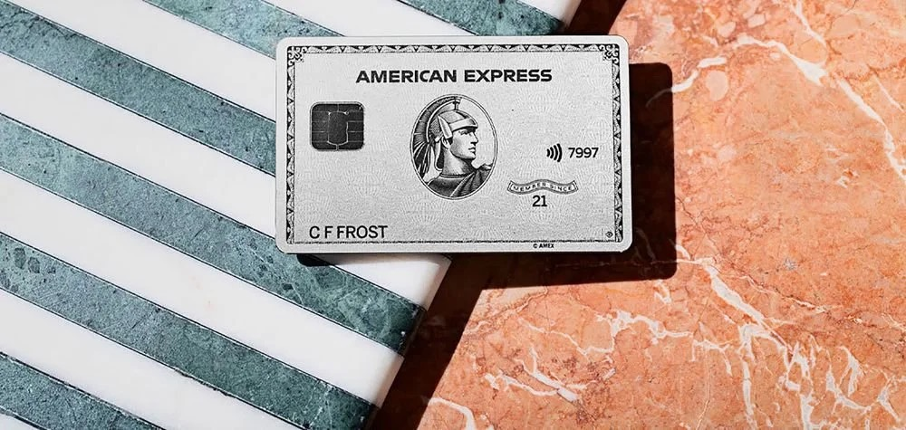
The new color of luxury: relaunching Platinum as a lifestyle card, not a travel card.
American Express had one of the most valuable brands in the world and a problem money couldn't solve: a legacy. For decades it had been the card of travel and reward — premium, dependable, slightly establishment. When Amex's ambition shifted to becoming a global lifestyle brand, it needed to harness its heritage in a whole new way.
As VP of Story at Day One, my job was to help Amex show up in culture. I led internal and cross-agency teams to build earned-media initiatives and social-first campaigns that could move the brand into the cultural conversation while protecting everything that made Amex Amex. Earned media is unforgiving — it only works when the idea is worth sharing — so the discipline was to find the stories already latent in the brand and give them a stage.
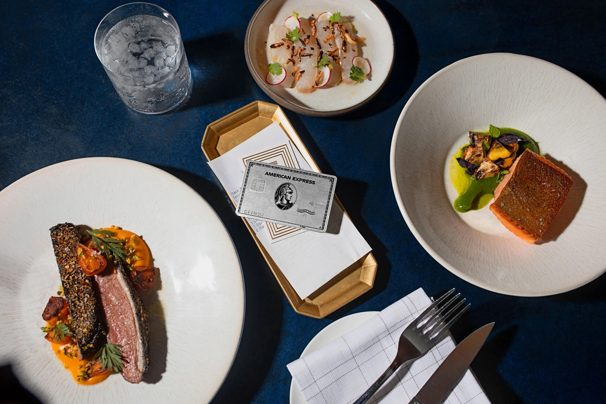
Amex Platinum, reframed around dining, wellness, retail, and art — luxury as a way of life.
The centerpiece was the relaunch of the Platinum card. Platinum had always been read as a travel product, but my team helped reposition it as a true luxury lifestyle card, spanning dining, wellness, retail, and art. We staged a summer launch across earned channels and built it toward a multi-agency moment during Art Basel: the Museum of Platinum, an Instagram-native initiative that broke the brand's year-over-year engagement records.
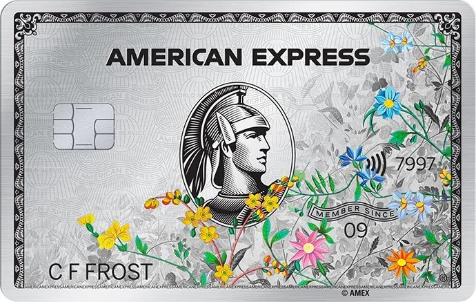
Platinum × Julie Mehretu, putting a contemporary artist at the center of a financial product.
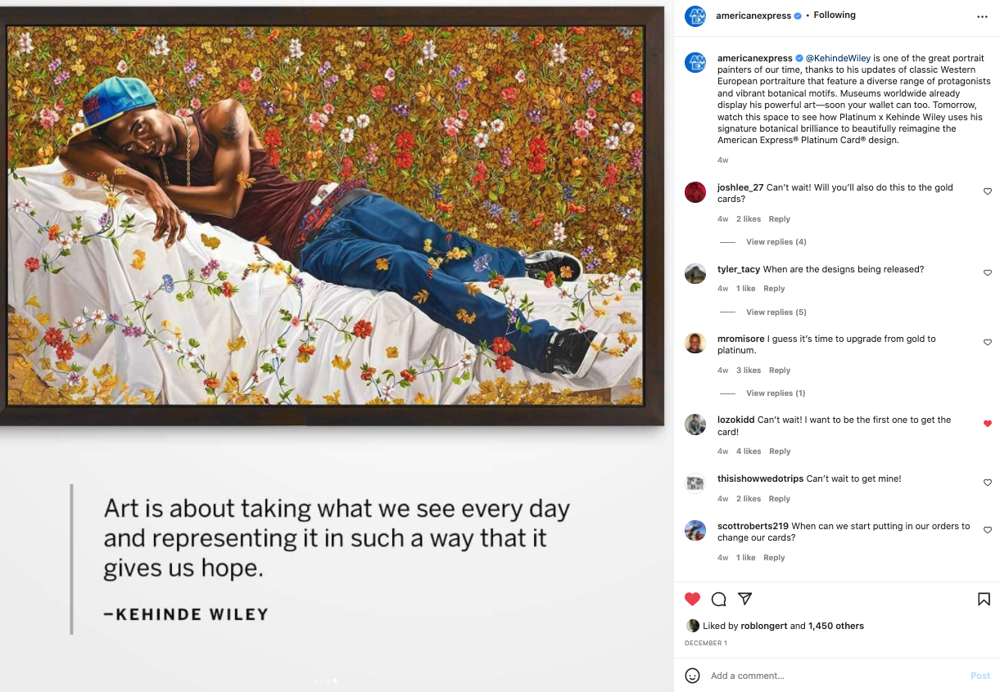
The Museum of Platinum at Art Basel — a record-breaking, social-first culmination of the relaunch.
A lifestyle brand also has to stand for something without lecturing about it. To carry Amex's long-term commitment to diversity and inclusion, we produced a short-film series celebrating the visual artists who create store signage for the brand, putting real makers at the center of the story.
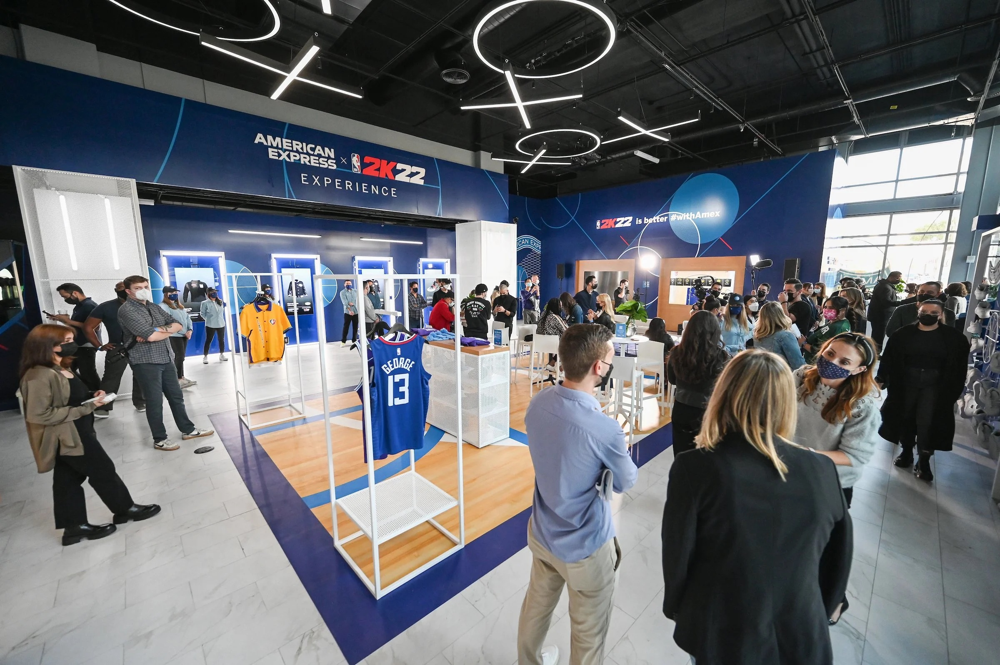
The NBA 2K IRL shop and Twitch launch — a card offer that arrived as a gaming moment.
Reaching a younger card member meant going where culture happens. To celebrate Amex's first NBA 2K22 offer, we opened NBA 2K's first in-real-life shop, stocked with exclusive digital merchandise, and threw a launch party where NBA players faced off in gameplay streamed live to 450,000 fans on Twitch. It was a financial-services announcement that looked nothing like one.
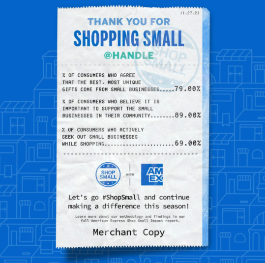
The Shop Small receipt — proof that small brand moments can have outsized impact.
Not every story has to be loud to be earned. For the twelfth year of Small Business Saturday in 2021, I conceived the Shop Small receipt initiative — a small, tangible gesture handed to customers who supported local businesses — which the client has since held up as a model of audience engagement. As Story lead I guided the Day One team day to day: ideating on-brand content series, building the editorial calendar, and partnering with the client to turn broad brand goals into culture-worthy, social-first moments that stopped people mid-scroll.
INCITE arrives at Wired25 — a tech company that doesn't exist, selling a future you'd rather not buy.
The best way to market a show about surveillance capitalism is to commit the crime in public. To promote the third season of Westworld, we convinced HBO to hold off on advertising the show at all and instead own the cultural conversation the show was really about: data, privacy, and how cheerfully we're capable of handing our whole selves over to organizations we barely understand. The premise of the season had moved out of the iconic Westworld theme park and into a world run by algorithms. So we built one IRL — and took it on tour, from San Francisco to Las Vegas.
The first stage was Wired25, the magazine’s conference in San Francisco. There we introduced the world to INCITE: a new tech giant with a slick brand, a confident mission, and an unsettling vision of the future. Nothing on the surface said HBO or Westworld. INCITE simply behaved like a real company that had bought its way into the conference.
From the marketing booth to live actors to a sponsored panel, INCITE delivered one message: the more data you give us, the happier you'll be.
I provided creative direction and experiential design across the activation — the booth, the actors working the floor in character, the sponsored panel, the messaging running through all of it. The single idea we wanted attendees to walk away with, slightly disturbed, was INCITE’s core promise: the more data you hand over, the happier you’ll be. Said out loud, at a tech conference, by people who clearly believed it, the line landed exactly where Westworld wanted its audience — uncertain whether to laugh or leave.
By the time attendees realized INCITE was a teaser for Westworld, they'd already lived inside the show's premise for an afternoon.
The reveal did work a billboard can’t: it made an audience feel the show before telling them what it was. By the time the INCITE mask came off, the conversation about data privacy was already running — the one HBO wanted to own going into the season. Wired25 proved the premise could hold a conference floor for an afternoon. The second stage tested how much further it could go.
The data dinner: a menu chosen by your own data, and a keynote starring one guest’s entire life.
At CES that January, INCITE hosted a dinner at the NoMad in Las Vegas for the tech press. The invitation opened with a pointedly personal questionnaire and a waiver most guests clicked through without reading — which was the whole point. Hosts greeted arrivals by name and asked after their pets, also by name. Menus arrived pre-chosen, built from each guest’s own data. Actors seeded among the tables let personal details fall into conversation until nobody was sure who was real. At the keynote, INCITE reconstructed one guest’s life on screen — her choices, her career, the road not taken — until she panicked and fled the room. She was a plant. The data wasn’t. Everyone in that room had consented, and it still felt like a breach of trust: the season’s whole argument in a single evening. We committed the crime in public twice. The second time, the victims RSVP’d.
Regeneration — a campaign that dared Equinox's most relentless members to power down.
Equinox isn't a gym; it's a brand built on the religion of high performance. As the in-house copy lead, I worked across every surface that held this high-performance religion together — the tone of voice, the brand DNA, the read on where culture and the luxury fitness world were heading — and then put it all to work in 360 campaigns and in the launch of new clubs and sub-brands. As the business evolved from fitness to luxury lifestyle, the challenge never wavered: how do you keep spreading the high-performance gospel?
Take Regeneration. Recovery had quietly become a huge part of the Equinox story, but the word itself meant nothing to members whose entire identity was built on pushing harder. So I led a campaign that dared them to do the hardest thing a high performer can do: nothing. Power down. Go slow. Discover that rest is where gains happen. The messaging laddered across the whole portfolio, so a single idea could carry everything from meditation podcasts to sleep coaching.
One idea — doing nothing is everything — stretched across meditation, sleep coaching, and the rest of the brand portfolio.
Personal training was a different problem. Equinox needed to redefine how it talked about its trainers, so I led a team to build Impossible Happens — a storytelling platform about extraordinary change that starred real members. I crafted the concept, cast the talent, directed four spots, and wrote the tagline and supporting copy. The story was simple: with the right trainer, you're partners in the impossible. You break records, tear down walls, and unlock the extraordinary together. Our program, your results.
Impossible Happens — the personal training platform that let Equinox tell real members' stories for the first time.
And then there was Firestarter. Group fitness is the lifeblood of Equinox, and giving a new class a stylized, buzzworthy launch is how the brand plants its flag as the leader in high performance. I wrote a lot of these; Firestarter is one of my favorites. The pitch: you've never spent half an hour like this — the next generation of cardio HIIT, every second supercharged, a complete cardio challenge that incinerates your goals in thirty flat. Be glad it's not longer.
Firestarter — a class launch built to feel like an event.
Beneath the campaigns sat the deeper work: the voice. Equinox has to speak to everyone from fitness hipsters to lovers of pure luxury, often in the same breath, so I helped craft the tone-of-voice guidelines that let the mother brand do exactly that — confident, knowing, a little provocative, never trying too hard. Those guidelines became the foundation that every sub-brand could build from and react against.
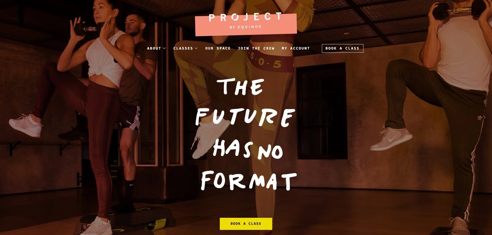
The PROJECT sub-brand turned the Equinox brand voice playbook on its head.
When Equinox launched its first standalone studio, it was time to tear up that rulebook on purpose. I led a team to forge a rebel brand for PROJECT, with a voice that's carefree, unfiltered, and energetic. As copy lead I played a central role in a social presence that still inspires devotion and defies expectations — the brand allowed to say what the mother brand only implies.
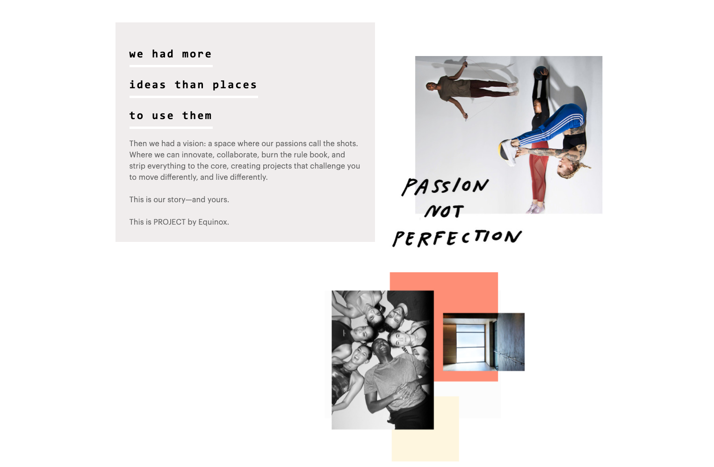
PROJECT's rebel voice embraced spontaneity, creativity, and an always-WIP mindset.
At the opposite end of the spectrum was E by Equinox. For years it had lived as hyper-exclusive training spaces tucked inside existing clubs — E club was like fight club; you didn't talk about it. As Equinox expanded in London, I helped lead a team to build E by Equinox into a distinct brand for long-term growth, starting with the E St James's club. As copy lead I crafted a voice that's understated, unexpected, and utterly personal.
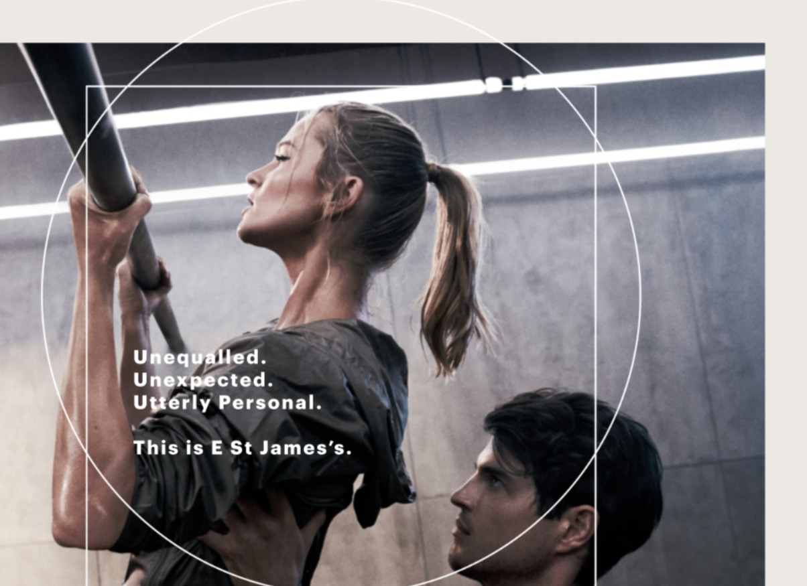
E by Equinox — a deliberately quiet, intensely personal voice for the brand's most exclusive tier.
Finally, after Equinox acquired six existing sports-club facilities, I led a team to create a distinct Equinox Sports Club brand — one that could speak to a more sophisticated member and a more comprehensive offering. The result was a more discerning, more inclusive incarnation of Equinox for a high-powered community: a different set of audience needs, activated by the same high-performance gospel.
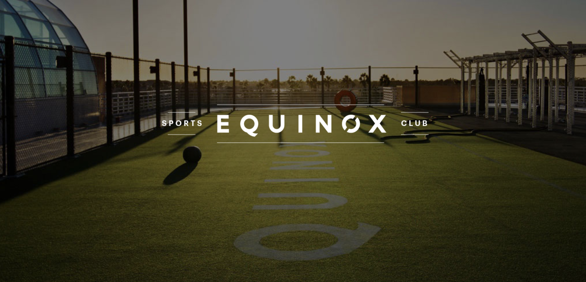
Equinox Sports Club — a more discerning, more comprehensive incarnation of the brand for a high-powered community.
LifeWear — a great idea Uniqlo had never fully explained, turned into a platform and a way of life.
Uniqlo already had one of the best brand ideas in retail: LifeWear. They'd just never truly explained what it meant. It sat on the brand like a tagline waiting for a definition. Working with Uniqlo's Creative Director, the legendary John Jay, our team set out to give the idea both a meaning and a home — to turn two syllables into something a customer could actually feel.
The thought that unlocked it was simple: performance wear for your life. Not athletic performance — the performance of an ordinary day, lived well. From that concept I wrote the brand positioning and mission statement for LifeWear, and landed on a line Uniqlo still uses today: Simple Made Better. It said what the brand had always done.
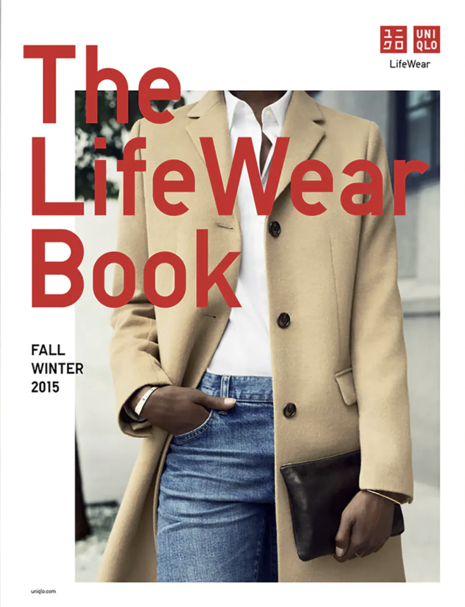
LifeWear magazine — founded to build a world and tell the stories of real people who live the LifeWear ethos.
A platform needed a place to live, so we founded LifeWear, a quarterly magazine, and I served as its chief editor. The magazine humanized the brand — it put real people, real craft, and real stories where product shots usually go, and let the philosophy of LifeWear come through in how the brand paid attention to the world rather than its claims about itself.
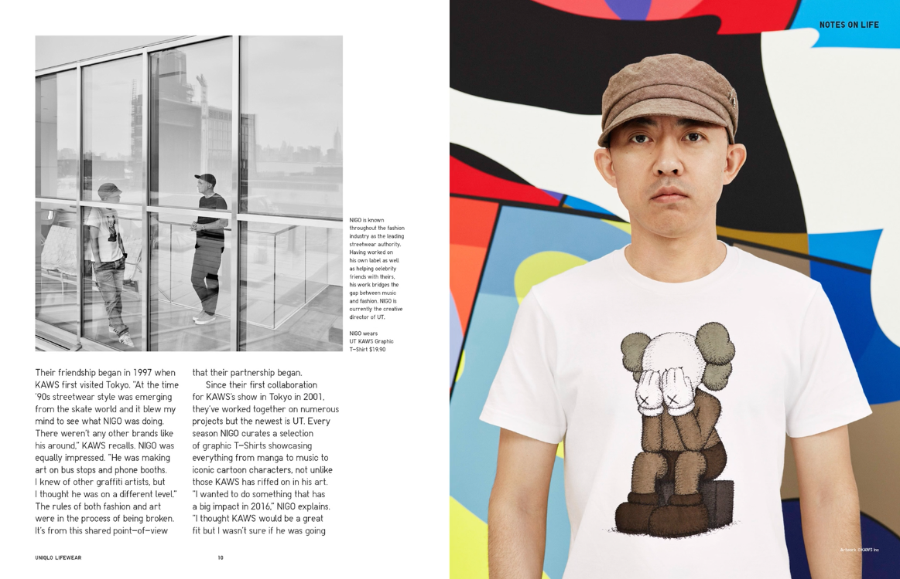
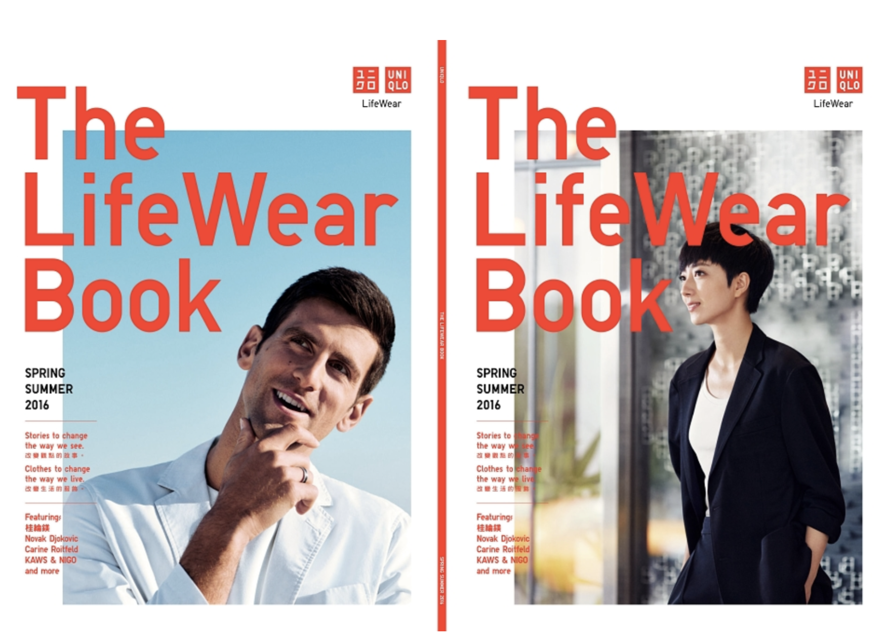
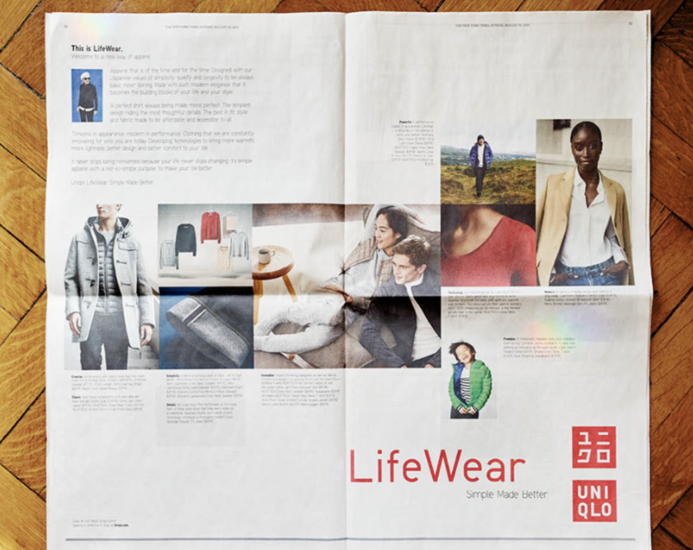
The other half of the work was emotional rather than editorial. Uniqlo is rightfully proud of its HEATTECH clothing, but a fabric story is hard to make people feel — warmth is an abstraction until it belongs to someone. Collaborating with the Belgian director duo Norman Bates, I provided creative direction and wrote scripts for four films built around true-life heroes empowered by HEATTECH: people like Cate, a skyscraper window washer and single mother who works in the sky to put food on the table.
HEATTECH, told through Cate — a window washer and single mother.
The idea across all four films was the freedom you feel when you're less weighed down but warmer than ever — the technology disappearing into the life it makes possible. Each story let the product do its job quietly in the background while a real person did something extraordinary in the cold, which is exactly where a performance fabric earns its keep.
The manifesto Away liked so much they put it on the office walls.
Away was growing at a fever pitch, and it had outgrown its own category. The company had become famous for a suitcase, but a suitcase is a small thing to be famous for when your ambition is to be the world's number one travel brand. To get there, Away needed to stop being about luggage and start being about travel. Partnering closely with our strategy team, I helped forge a brand purpose around a single insight: any trip, however ordinary, can change how you see the world. That's how Away's brand purpose became, "to transform travel so it can transform you."
Then I wrote the manifesto that gave the purpose its voice. Away liked it enough to plaster it on their office walls — which is, honestly, the highest compliment a piece of writing can get.
But transformative travel was an idea that had to keep moving—so we turned it into a brand campaign: Made for Departure. Four spots, each celebrating how travel opens you up to unexpected paths and quietly rearranges your world. I provided creative direction and writing — and, in the line of duty, had to travel all the way to Mallorca to shoot them. Cue the world's tiniest violin.
Made for Departure — four films on how travel changes you, shot in Mallorca.
Before Sunrise — one of the Made for Departure spots.
The last piece was the one that had to outlast all of us. With a goal as big as becoming the world's number one travel brand, Away was scaling a growing in-house team of copywriters — and a brand voice can't live in one person's head if it's going to survive that. So we crafted copy guidelines that would help that team identify what to say and how to say it. I partnered closely with strategy and directed, edited, and wrote the guidelines, along with the supporting copy that showed them in action.
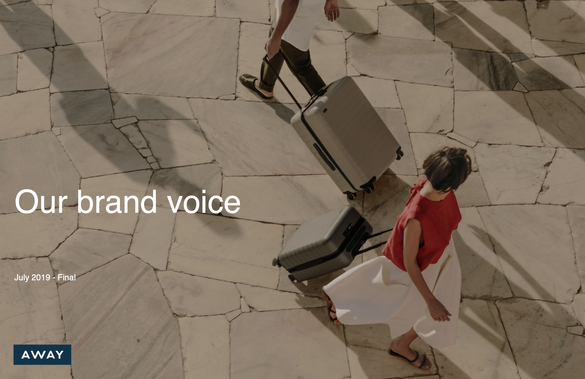
A roadmap for a trailblazing brand still finding its voice — built for a whole team.
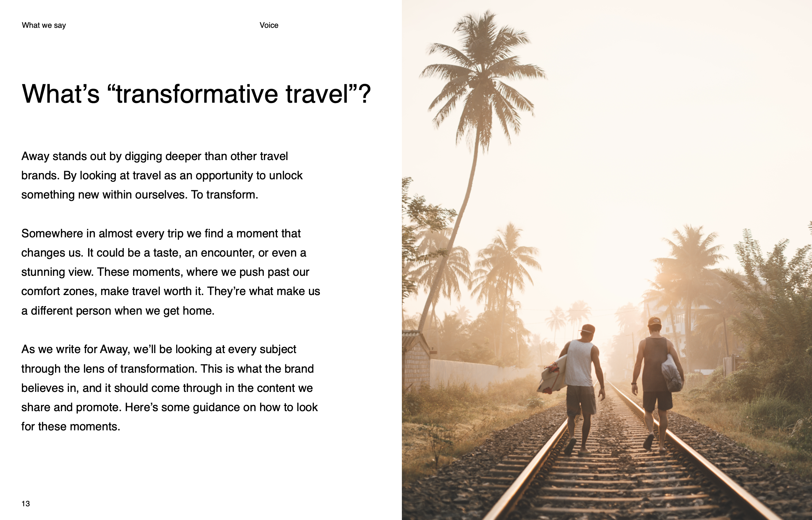
The guidelines turned a feeling into a method.
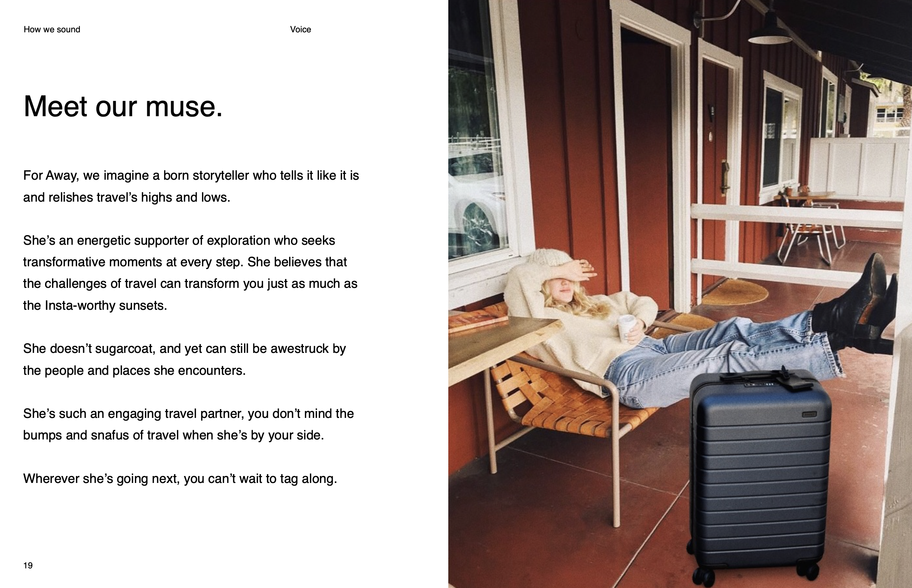
Our muse for the brand voice—we thought of her as Bourdain's little sister.
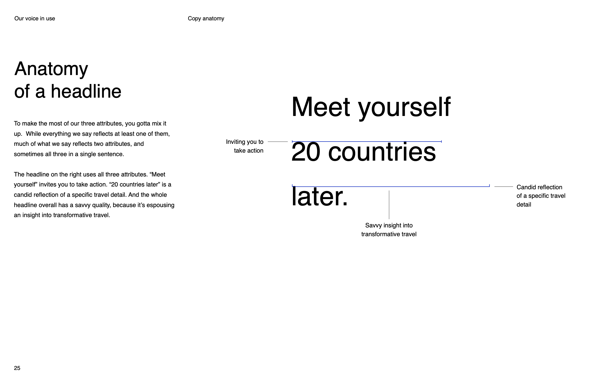
Detailed explanations broke down the new brand voice, step by step.
Sol LeWitt × Microsoft
ClientMicrosoft, with the Sol LeWitt EstateAgencyAdaRoleCreative & Editorial DirectionScopeConcept, editorial direction, AI art experience
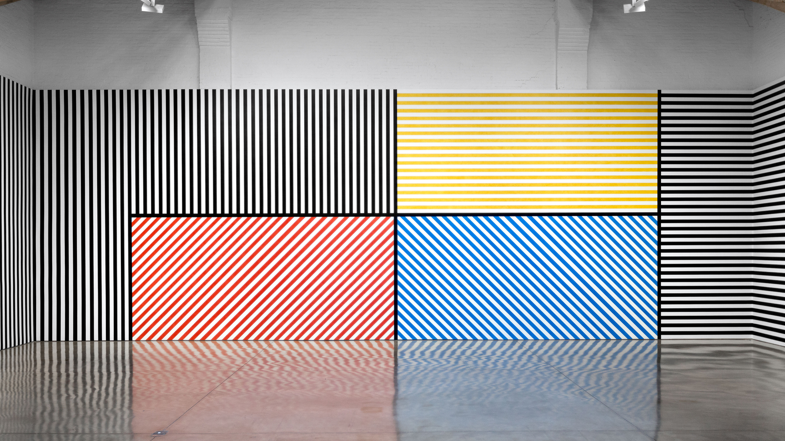
I creative directed an AI-driven app that turned Sol LeWitt's works into portals — scan the art, unlock the artist.
Sol LeWitt is one of the most important artists of the postwar era — the conceptual pioneer whose instruction-based wall drawings, executed by other hands from his written rules, anticipated the logic of the digital age decades before it arrived. He is, in a real sense, a forefather of today's generative and digital creativity. The problem is that a new generation mostly doesn't know him. As part of Microsoft's commitment to innovating how we explore art and culture, we set out to fix that.
Working closely with the design agency Ada, curator Lindsay Aveilhé, and the Sol LeWitt Estate, I helped concept, direct, and launch a new form of digital art experience: an AI-driven app that takes people beyond the museum and into the life, career, and legacy of the artist. My role was creative and editorial direction — shaping what the experience would say about LeWitt, and how it would carry his ideas to an audience meeting them for the first time.
LeWitt's seriality has an instruction-based logic that makes him feel native to the digital age.
The app turns LeWitt's works into digital portals. Scan a piece with your phone and it unlocks a multimedia journey through his life, his career, and the inspirations behind the work. An interactive map traces his pieces around the world, and an immersive 3D tour lets anyone walk through his Connecticut studio — putting the place where the instructions were written into the hands of people who may never have set foot in a gallery.
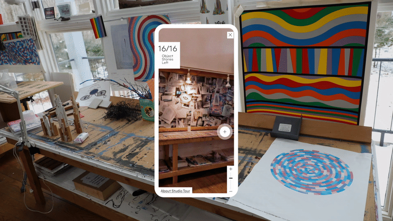
An immersive 3D tour of LeWitt's Connecticut studio — the museum experience, beyond museum walls.
The result was a way of meeting an artist that suits the way this generation actually encounters everything else: through a screen, on demand, by curiosity. It used technology not to replace the art, but to do what LeWitt always did — hand someone a set of instructions and let the work come alive in their hands.
Undercurrent — a boundary-pushing exhibition offering new visions for climate action.
To inspire action, you first have to change perception. The climate crisis suffers from a strange kind of invisibility — too vast, too slow, too statistical to feel — and the usual responses, fear and guilt, tend to make people look away rather than lean in. Undercurrent was built to do the opposite: to make the crisis something you could walk into, feel, and leave changed by.
The exhibition brought together more than forty musicians, artists, creatives, and nonprofit partners to present immersive artworks designed to provoke real reactions to the climate crisis — and, crucially, to empower the people who came to participate in a better future rather than mourn a worse one. Visitors could explore the ocean with Nosaj Thing, search for pollen with Bon Iver, reconnect to nature with Aluna, and move through dozens of other worlds in between.
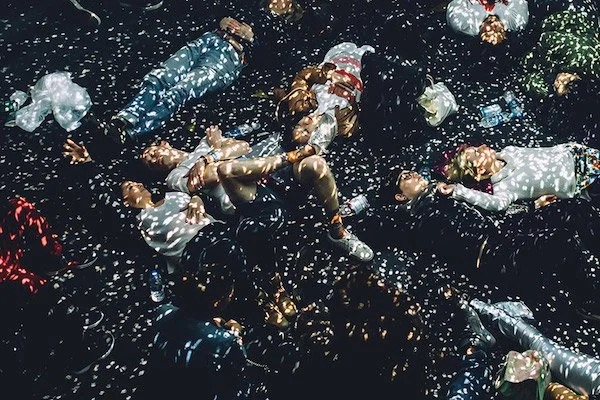
Each installation explored the themes of climate crisis, science and creativity from a different angle.
As creative director and scriptwriter, my work was to find the thread running through all of it — to give a sprawling collection of immersive pieces a shared voice and a coherent emotional arc, so that the experience built toward empowerment instead of dissipating into spectacle. The scripts had to honor each artist's vision while keeping the whole exhibition pointed at the same conviction: that creativity can change how we see, and changing how we see is where action begins.
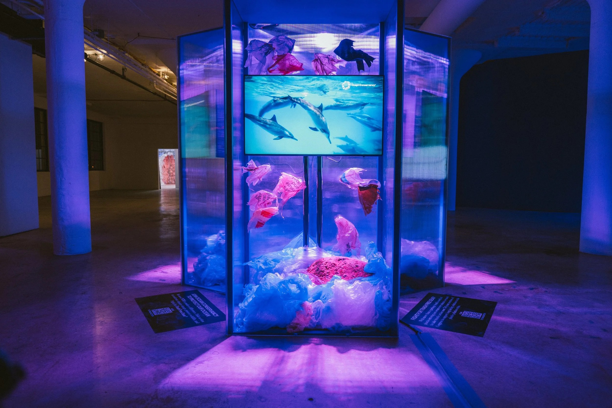
Explore the ocean with Nosaj Thing, search for pollen with Bon Iver, or reconnect with nature with Aluna.
The exhibitions' goal was agency — sending people out in the world ready to engage and take action.
On Acid: A Field Guide to Altered States
On Acid: A Field Guide to Altered States — John Moeller & William Rauscher, 2011.
On Acid: A Field Guide to Altered States is a 2011 experimental softcover publication by John Moeller and William Rauscher that explores humanity's engagement with altered states of consciousness. Tracing a historical line from Benjamin Blood's 1874 nitrous oxide writings through figures like William James and Timothy Leary to modern art, the book features contributions and archival texts from notable thinkers and artists including Albert Hofmann, Aldous Huxley, and Alan Watts.
Disentangled from familiar cultural contexts, On Acid is an experimental program, an acidic editorial process that mirrors the deconstructive relations to counterculture cultivated in contemporary art. The book concludes with a series of new conversations with Freeman and Lowe, Hamilton Morris, and Arik Roper.
My artistic practice is powered by collisions between technology and literature. I treat literature as a language system and apply intelligent tools that open up new layers of meaning and scramble the divides between author, work and audience.
For the Earthseed Design System, I applied the form and logic of the markdown file to create a machine-readable instruction manual based on the narrative worlds of Octavia Butler's speculative fictional novels, Parable of the Sower and Parable of the Talents. In the Parable novels Butler crafted a religion — Earthseed, whose one certainty is that God is Change — and left it as scripture and instruction. Earthseed Design asks a designer's question of it: if a belief had to spread across broken, scattered communities with no head office and no budget, what would its design system have to be?
The answer is the Earthseed Design System. I used an LLM agent to scan the entire text of the first Parable novel and extract the rules and principles that would allow anyone to build their own Earthseed world—including founding their own community, just as the novel's protagonist does. The design system provides the tools that keep Earthseed recognizable from one community to the next: a creative position, doctrine read as a design constraint, and specifications for color and typography. It is written for people with no access to industrial production, built for portability and survival. There is no license and no central authority — anyone holding the document already has permission to use it.
Like a Sol LeWitt certificate, the document is the work: a set of instructions written once and executed by many hands. For example, you can use it to design a logo, a religious pamphlet, a water barrel for your Earthseed community, or an approach to your community's funeral rites. The Earthseed Design System also fulfills one of the missions native to the Parable story: to keep spreading knowledge and practice of Earthseed.
Earthseed Design System is made for a world that has to improvise — and the clearest way I know to show what a design system is actually for: the smallest shared language that lets a thing stay recognizably itself while every hand that touches it makes it their own.